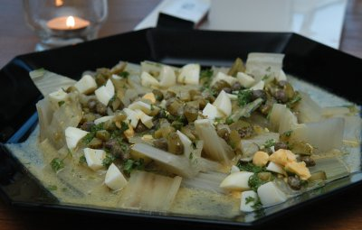

| Zutaten für 4 Personen: | |
| 1 kg | Krautstiele mit Kraut (750 g Ohne Kraut) |
| 1 | Ei |
| 1 Zweig | Petersilie |
| 2 | Cornichons |
| 1/4 TL | Zwiebelsalz |
| 1 Prise | Pfeffer |
| 1 Prise | Salz |
| 1/2 TL | Senf |
| 3 EL | Weinessig |
| 1 dl | Sonnenblumenöl |
| 1 EL | Kapern |
Kraut von Stielen entfernen (Kraut nicht wegwerfen, es kann wie Spinat zubereitet werden.)
Stiele waschen und in 3 cm lange Streifen oder 10 cm lange Stücke schneiden. Krautstiele in Salzwasser 10 - 15 Minuten gar kochen, kalt abspülen und kaltstellen.
Vinaigrette: Ei 8 Minuten kochen; schälen.
Petersilie waschen und fein hacken.
Ei und Cornichons grob hacken.
Zwiebelsalz, Pfeffer, Salz, Senf und Essig miteinander verrühren. Öl beigeben.
Alle Zutaten mischen.
Krautstiel auf eine Platte geben; Vinaigrette darüber verteilen.
Herbert Eigenmann, Code: KOV
Hat Anfang August 2008 ausgezeichnet geschmeckt. RE
@LINKBACK_TAG@ @WAKELOCK@